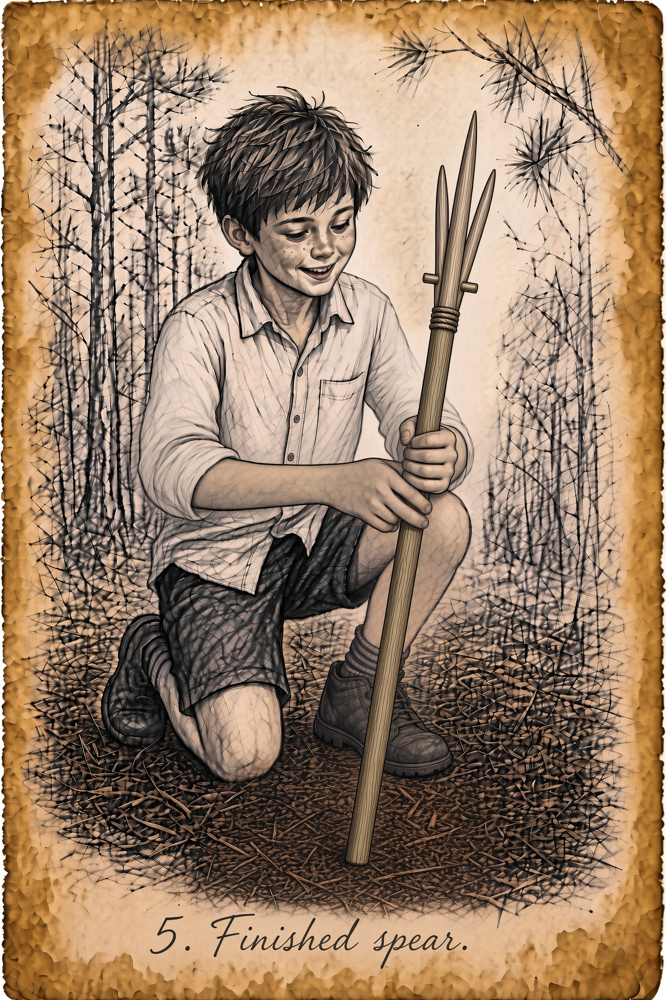

Chritty’s Bushcraft

Homemade Four-Point Spear — Four points beat one. You don’t have to hit perfect. You pin.
Brownsboro & Chandler. Neighbors first.
Digital Edition · Est. 2026

Homemade Four-Point Spear — Four points beat one. You don’t have to hit perfect. You pin.
No column this week. Cadence: monthly on the 3rd Monday. Essays appear here when filed.
Neighbor columns publish on their monthly cadence only — no invented essay titles.
Free neighbor pitches + paid sponsored columns later; reviewed before posting. Pitch a column / Request a column slot